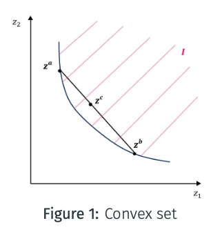
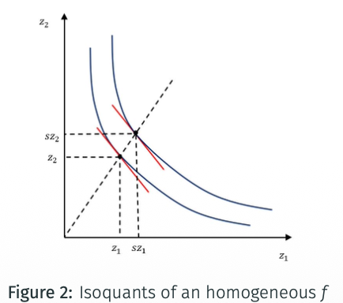
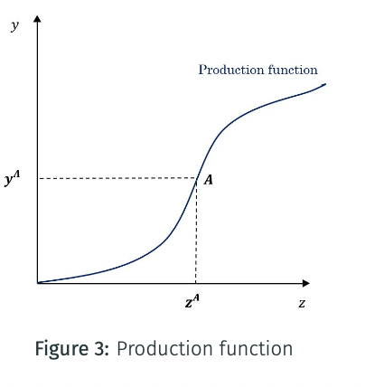

1. Technology and Production
Technology, input choices, and returns to scale.
Vocabulary
Production function
A production function measures the maximum output, denoted by $y$, that can be obtained from a given input vector $z$. It describes the technological relation between the inputs used by a producer and the output that can be produced.
Throughout this chapter, the production function is assumed to satisfy the following properties.
Essentiality
With no inputs, the maximum output is zero.
Smoothness
The production function is twice continuously differentiable, so its first and second derivatives can be used in the analysis.
Monotonicity
Increasing the amount of at least one input produces at least as much output as before. More input does not reduce the maximum feasible output.
Production set and isoquant
Production set
The production set $I^0$ contains all input bundles that can produce at least the output level $y^0$:
It is analogous to a feasible set.
Isoquant curve
The isoquant $Q^0$ contains all input bundles that produce exactly the output level $y^0$:
It is analogous to an indifference curve.
Convexity of the production set
The production set $I^0$ is convex. If $z^a$ and $z^b$ are two ways of producing $y^0$, any mixture of these two input bundles can produce at least as much output. The isoquant curves form the boundary of the production set.

How to read the figure
The input bundles $z^a$ and $z^b$ lie on the same isoquant, so each produces the same output. The mixture $z^c$ lies inside the production set associated with that output level.
The figure therefore shows the meaning of convexity: combining two feasible input plans remains feasible for producing at least the same output.
Short- and Long-Term
Consider a production function with two inputs. Input $z_1$ is a variable input: its quantity can be varied instantaneously. Input $z_2$ is a fixed input: its quantity can be varied from period $t$ to period $t+1$.
Short term — period 0
The producer can vary $z_1$ while $z_2$ remains fixed.
Long term — period 1
The producer can vary both $z_1$ and $z_2$.
Two responses
Input substitution changes one input while the others are constant. Returns to scale vary all inputs in the same proportion.
Marginal Product
The marginal product of input 1 measures the change in output when input 1 changes while input 2 is held fixed:
Marginal Rate of Technical Substitution
The marginal rate of technical substitution measures the change in input 2 needed to keep output constant when input 1 changes:
The MRTS is the technical counterpart of the marginal rate of substitution. It is usually assumed to be diminishing.
Elasticity of Substitution
The elasticity of substitution connects changes in the input ratio to changes in the MRTS:
It measures the percentage change in the ratio $z_2/z_1$ associated with a 1% change in the MRTS between the two inputs. A higher elasticity means that the firm can substitute one input for the other more easily.
Moving from point $A$ to point $B$ on a given isoquant, both the MRTS and the input ratio change. The elasticity of substitution is the ratio of these changes, so it measures the curvature of the isoquant.
Low elasticity
Large changes in the MRTS are associated with small changes in the input ratio. The inputs are poor substitutes; the isoquant is approximately flat.
High elasticity
Small changes in the MRTS are associated with large changes in the input ratio. The inputs are easily substitutable.
Returns to Scale
Returns to scale measure the change in output when both inputs are multiplied by the same factor $s$. They can be characterized by the degree of homogeneity $\nu$ of the production function or by the elasticity of scale $E$.
The elasticity of scale compares the change in output caused by scaling all inputs with the common proportional change in inputs.
Constant returns
Here $E=1$, or $f$ is homogeneous of degree $\nu=1$.
Increasing returns
Here $E>1$, or $f$ is homogeneous of degree $\nu>1$.
Decreasing returns
Here $E<1$, or $f$ is homogeneous of degree $\nu<1$.
Homogeneous functions of degree $\nu$
When the production function is homogeneous of degree $\nu$, scaling every input by $s$ gives $f(sz)=s^\nu f(z)$. The elasticity of scale is then equal to the degree of homogeneity:
Elasticity of scale
The first equality is the definition of $E$. The next line uses homogeneity, and differentiating $s^\nu f(z)$ gives the final result.
Its partial derivatives are homogeneous of degree $\nu-1$:
Therefore, the slope of an isoquant depends on input proportions $z_i/z_j$, rather than the scale of production:
How to read the figure
The bundles $(z_1,z_2)$ and $(sz_1,sz_2)$ lie on the same ray from the origin: their input proportions are the same.
The tangents have the same slope, illustrating that the MRTS depends on the input proportions and not on the production scale.

Incorporating increasing or decreasing returns to scale
Starting from a function $f$ with constant returns to scale, the course considers the transformation:
Effect of the transformation
If $\gamma>1$, $F$ exhibits increasing returns to scale. If $\gamma<1$, $F$ exhibits decreasing returns to scale.

Returns to scale over the growth of a firm
As a firm grows, it can successively experience increasing, constant, and decreasing returns to scale.
The figure marks an input level $z^A$ and the corresponding output $y^A$ on the production function.